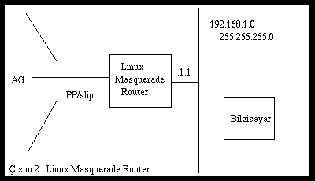
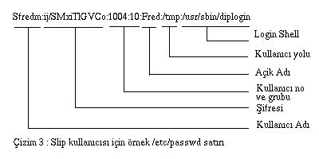
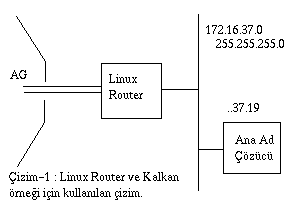

İKİ BİLGİSAYAR ARSINDAKİ BAĞLANTI TANIMLARI
EQL - Çoklu hatlar için trafik dengeleyici.
EQL birim adı `eql'dir. Her bilgisayar için bir tane EQL birimi olabilir (Linux kernel kodunu değiştirmezseniz). EQL birden çok uçtan uça bağlantıyı (ppp, slip ya da plip gibi bağlantıyı) tek bir mantıksal birim olarak görür ve tcp/ip taşıyıcısı olarak tanımlar. Bu programı kullanmanın en önemli nedeni, çoğu zaman birden çok düşük hızlı hat kullanmanın, yüksek hızlı tek hat kullanmaktan daha verimli ve ucuz olmasından kaynaklanır.
Bu işlemin doğru çalışabilmesi için hattın öteki ucundaki bağlantıda da EQL kullanılıyor olması gerekir. Linux, Livingstone Portmasters ve yeni dial-in sunucuları EQL uyumlu destek verebilecek özellikleri var.
EQL tanımlarını yapabilmek için eql araçlarına ihtiyaç vardır. Bu araçlar http://www.ibiblio.org/pub/linux/system/network/serial/eql-1.2.tar.gz adresinden sağlanabilir.
EQL hakkında çeşitli belgeyi eql- What is eql adresinde bulunur.
Tanımlama oldukça basittir. Önce eql arayüzü tanımlanır. "eql" arayüzü herhangi bir ağ arayüzü gibi tanımlanır. IP adresi ve "mtu" değerlerini ifconfig programı ile tanımlarsınız. Örnek :
ifconfig eql 192.168.10.1 mtu 1006 route add default eql
Daha sonra kullanacağınız hatları elle başlatırsınız. Bunlar uçtan uca bağlantı biçimlerinin herhangi bir türünden olabilir.
Son olarak bu bağlantılarla eql birimi arasında seri bir bağlantı oluşturmak gerekir. Buna "enslaving" adı verilir ve eql_enslave komutu ile yapılır. Örneğin :
eql_enslave eql sl0 28800
eql_enslave eql ppp0 14400
eql_enslave komutunda kullanılan tahmin edilen hız parametresi doğrudan bir şey yapmaz. Bu bilgi EQL sürücü tarafından kullanılır. Hattın hangi datagram'ları nasıl paylaşacağını belirlemesi için kullanılır. Böylece bu değerlerle oynayarak hatların yükünü ayarlamak ve ince ayar yapmak mümkündür.
Bir hattı EQL biriminden ayrımak için eql_emancipate komutu aşağıdaki gibi kullanılır :
eql_emancipate eql sl0
Artık yönlendirme komutlarını kullanabilirsiniz. Burada yönlendirme komutu gerçek seri bağlantılarla kullanılmaz, eql birimi ile tanımlanır. Tipik bir örnek :
route add default eql0
dir.
EQL sürücüsü Simon Janes, simon@ncm.com tarafından geliştirilmiştir.
IP Muhasebesi (Accounting)
linux içinde sunulan IP Accounting özelliği size ağ kullanımı hakkında bilgi verir. Toplanan bilgi paket ve byte sayısı olarak isteyene gönderilir.
Kernel hazırlandıktan sonra ipfwadm komutu ile IP accounting bilgileri tanımı yapılır. Kullanabileceğiniz bilgileri çeşitli sınıflara bölmek için pek çok yol vardır. Burada küçük bir örnek ile olay anlatılacaktır. Ayrıntılı bilgi için ilgili dökümana (man ipfwadm) bakmak gerekir.
Senaryo :
-
Diyelim sizin ethernet ağınız internet ortamına ppp ile bağlanmış olsun.
Ethernet üzerinde bir bilgisayarınız var ve bazı hizmetleri sunmaktadır.
Siz telnet, rlogin, ftp ve WEB sunucular tarafından ne kadar trafik
üretildiğini öğrenmek istiyorsunuz.
Bu senaryo için aşağıdakine benzer bir dizi komut kullanmanız gerekir.
# # Flush the accounting rules ipfwadm -A -f # # Add rules for local ethernet segment ipfwadm -A in -a -P tcp -D 44.136.8.96/29 20 ipfwadm -A out -a -P tcp -S 44.136.8.96/29 20 ipfwadm -A in -a -P tcp -D 44.136.8.96/29 23 ipfwadm -A out -a -P tcp -S 44.136.8.96/29 23 ipfwadm -A in -a -P tcp -D 44.136.8.96/29 80 ipfwadm -A out -a -P tcp -S 44.136.8.96/29 80 ipfwadm -A in -a -P tcp -D 44.136.8.96/29 513 ipfwadm -A out -a -P tcp -S 44.136.8.96/29 513 ipfwadm -A in -a -P tcp -D 44.136.8.96/29 ipfwadm -A out -a -P tcp -D 44.136.8.96/29 ipfwadm -A in -a -P udp -D 44.136.8.96/29 ipfwadm -A out -a -P udp -D 44.136.8.96/29 ipfwadm -A in -a -P icmp -D 44.136.8.96/29 ipfwadm -A out -a -P icmp -D 44.136.8.96/29 # # Rules for default ipfwadm -A in -a -P tcp -D 0/0 20 ipfwadm -A out -a -P tcp -S 0/0 20 ipfwadm -A in -a -P tcp -D 0/0 23 ipfwadm -A out -a -P tcp -S 0/0 23 ipfwadm -A in -a -P tcp -D 0/0 80 ipfwadm -A out -a -P tcp -S 0/0 80 ipfwadm -A in -a -P tcp -D 0/0 513 ipfwadm -A out -a -P tcp -S 0/0 513 ipfwadm -A in -a -P tcp -D 0/0 ipfwadm -A out -a -P tcp -D 0/0 ipfwadm -A in -a -P udp -D 0/0 ipfwadm -A out -a -P udp -D 0/0 ipfwadm -A in -a -P icmp -D 0/0 ipfwadm -A out -a -P icmp -D 0/0 # # List the rules ipfwadm -A -l -n #
Listedeki en son komut, doğru sonuçları ve toplamları üretir.
IP accounting toplamlarında bilinmesi gereken en önemli nokta, doğru matematiksel sonuçlar elde etmek için sayıları toplarken sıralamayı doğru yapmaktır. Örneğin ftp, rlogin, telnet ve www nin toplamlarını alabilmek için bu değerleri, tüm portalardaki uygun bulunan kurallardaki toplamlardan çıkartmak gerekir.
# ipfwadm -A -l -n
| IP Muhasebesi Kuralları | ||||||
|---|---|---|---|---|---|---|
| Paketler | bytes | dir | prot | kaynak | gideceği yer | ports |
| 0 | 0 | in | tcp | 0.0.0.0/0 | 44.136.8.96/29 | * -> 20 |
| 0 | 0 | out | tcp | 44.136.8.96/29 | 0.0.0.0/0 | 20 -> * |
| 0 | 0 | in | tcp | 0.0.0.0/0 | 44.136.8.96/29 | * -> 23 |
| 0 | 0 | out | tcp | 44.136.8.96/29 | 0.0.0.0/0 | 23 -> * |
| 10 | 1166 | in | tcp | 0.0.0.0/0 | 44.136.8.96/29 | * -> 80 |
| 10 | 572 | out | tcp | 44.136.8.96/29 | 0.0.0.0/0 | 80 -> * |
| 242 | 9777 | in | tcp | 0.0.0.0/0 | 44.136.8.96/29 | * -> 513 |
| 220 | 18198 | out | tcp | 44.136.8.96/29 | 0.0.0.0/0 | 513 -> * |
| 252 | 10943 | in | tcp | 0.0.0.0/0 | 44.136.8.96/29 | * -> * |
| 231 | 18831 | out | tcp | 0.0.0.0/0 | 44.136.8.96/29 | * -> * |
| 0 | 0 | in | udp | 0.0.0.0/0 | 44.136.8.96/29 | * -> * |
| 0 | 0 | out | udp | 0.0.0.0/0 | 44.136.8.96/29 | * -> * |
| 0 | 0 | in | icmp | 0.0.0.0/0 | 44.136.8.96/29 | * |
| 0 | 0 | out | icmp | 0.0.0.0/0 | 44.136.8.96/29 | * |
| 0 | 0 | in | tcp | 0.0.0.0/0 | 0.0.0.0/0 | * -> 20 |
| 0 | 0 | out | tcp | 0.0.0.0/0 | 0.0.0.0/0 | 20 -> * |
| 0 | 0 | in | tcp | 0.0.0.0/0 | 0.0.0.0/0 | * -> 23 |
| 0 | 0 | out | tcp | 0.0.0.0/0 | 0.0.0.0/0 | 23 -> * |
| 10 | 1166 | in | tcp | 0.0.0.0/0 | 0.0.0.0/0 | * -> 80 |
| 10 | 572 | out | tcp | 0.0.0.0/0 | 0.0.0.0/0 | 80 -> * |
| 243 | 9817 | in | tcp | 0.0.0.0/0 | 0.0.0.0/0 | * -> 513 |
| 221 | 18259 | out | tcp | 0.0.0.0/0 | 0.0.0.0/0 | 513 -> * |
| 253 | 10983 | in | tcp | 0.0.0.0/0 | 0.0.0.0/0 | * -> * |
| 231 | 18831 | out | tcp | 0.0.0.0/0 | 0.0.0.0/0 | * -> * |
| 0 | 0 | in | udp | 0.0.0.0/0 | 0.0.0.0/0 | * -> * |
| 0 | 0 | out | udp | 0.0.0.0/0 | 0.0.0.0/0 | * -> * |
| 0 | 0 | in | icmp | 0.0.0.0/0 | 0.0.0.0/0 | * |
| 0 | 0 | out | icmp | 0.0.0.0/0 | 0.0.0.0/0 | * |
IP Eşleme (Aliasing)
Bazı durumlarda bir ağ birimine birden çok IP adresi tanımlamak gerekebilir. Internet Servis Sunucuları bu işlemi ftp ve WEB işlemleri için çoğu kez yaparlar.
Bir kez kernel IP_Alias desteği ile hazırlanınca tanımlama çok
kolaydır. Gerçek ağ adresine eşlenecek sanal ağ birimi
Diyelim sizin ethernet ağ bağlantınız iki değişik ağ adresine
ayna anda hizmet veriyor. Bu durumda bilgisayarınızın her iki ağa da
doğrudan erişimi olması gerekir. Aşağıdaki komutlar bu örnek için
gereklidir :
Bir eşlemeyi silmek için aşağıdaki örnek komut gibi bir komut kullanmak
yeterlidir :
Bu eşlemeyle ilgili tüm yönlendirmeler de otomatik olarak silinir.
IP Kalkanı (Firewall)
Bu konu başka dökümanlarda ayrıntıları ile ele anılmıştır. IP kalkanı
kısca, bilgisayarınızı yetkisiz kişilerin göndereceği datagram'lara karşı
korumak için kullanılır. Burada sizin istemediğiniz IP adreslerinden
gelen datagram'lar filitrelenir.
IP kalkanı üç değişik filitre sınıfına bölünebilir. Giriş filitresi,
çıkış filitresi ve yönlendirme filitresi. Giriş filitresi ağ biriminden
gelen datagram'lara uygulanır. Çıkış filitresi bilgisayardan ağ
birimine giden datagram'lara uygulanır. Yönlendirme kuralları ise bu
bilgisayara ilişkin olmayan gelen datagram'lara uygulanır.
IP kalkanı kuralları ipfwadm komutu kullanarak tanımlanır. Güvenlik
buradaki dökümanın konusu olmadığından yalnız basit bir örnekle IP
kalkanı hakkında bilgi vermeye çalışacağız.
IP kalkanının en çok kullanıldığı yer her halde linux bilgisayarını
yönlendirici olarak kullandığınız uygulamalardır. Burada yerel ağınıza
dışarıdan yetkisiz kullanıcıların girmesini engellemeye çalışmak için
kalkan tanımları yapılır.
Aşağıdaki çizim
Arnt Gulbrandsen, <agulbra@troll.no> tarafından hazırlanmıştır..
Buradaki örnek çizimdeki Linux Firewall/Router bilgisayarına uygulanan
kuralları tanımlar (bakınız çizim-1).
Aşağıdaki komutlar "rc" kütüğüne yazılır. Böylece sistem açıldığında
otomatik olarak başlar. Bu komutların ağ arayüzleri tanımlandıktan hemen
sonra başlatılması üst düzey güvenlik için önemlidir.
# Önce yönlendirme tablolarını sil
# PPP arayüzünü tümüyle kapa. Burada kullanılan -o seçeneği
# Önce multicast/anycast/broadcat tipi mesajların hepsini at
# Gelen SMTP ve DNS bağlantılarını Mail ve Name Sever için kabul et
# Kullanıcı portlarına cevap verme olsun
# identd için gelen mesajları kabul etme
# 192.168.64 ve 192.168.65 ağlarından gelen servis isteklerine cevap ver.
# içeride üretilen herşeyi kabul et ve kalkanı geçmesini sağla
# diğer pekçok TCP bağlantısını kabul etme ve log kayıtlarına yaz
# Aynı işlemleri UDP port'ları için de yap İyi bir kalkan tanımı biraz uzmanlık isteyen bir iştir. Bu örnek size
iyi bir başlangıç noktası olabilir. ipfwadm dökümanları ve konuya ilişkin
diğer dökümanlar okunarak kendi koşullarınıza en uygun kalkanı tanımlamanız
gerekir.
IP Masquerade
Pekçok kişinin yalnız bir telefon hattından internet ortamına
bağlantısı vardır. Bu durumda olanlara Servis Sağlayıcılar yalnız bir IP
adresi verirler. Böylece bir bilgisayarın tüm ağa tüm erişim olanakları
ile bağlanması sağlanmış olur. 'IP Masquerade' birden çok bilgisayarı
bir IP adresi üzerinden internet ağına bağlamak için çok akıllıca
düşünülmüş bir yöntemdir. Bu yöntemde tek sorun 'Masquerade' işleminin
her zaman tek yönü çalışmasıdır. Yani, 'Masquerate' yapılmış tüm
bilgisayarlar dışarıyı arar, bağlantı kurabilir ama dışarıdan aranmaları,
bu bilgisayara bağlantı yapılması söz konusu değildir.
Bunun anlamı "talk" ve "ftp" gibi bazı ağ hizmetlerinin pasif (PASV) konumda
çalışması gerekir. "telnet" ve "WEB" hizmetlerinde sorun yoktur.
Normalde bir linux bilgisayarında slip ve ppp bağlantı vardır. Ayrıca
ağ bağlantılarının tanımı yapılmıştır (büyül bir olasalıkla ethernet ağı).
'Masquerate' yapılan bilgisayarlar da zaten bu ağ üzerindedir. Bu bilgisayarlar
ethernet ağının IP adresini kullanır. Bu bilgisayarlarda "eşik" ya da "router"
adresi olarak linux bilgisayarın ethernet IP adresi tanımlanır.
Tipik ağ görüntüsü aşağıdaki cizimde gösterildiği gibidir.

Bu yapıyı tanımlama komutları :
Bu konuda ayrıntılı bilgi
http://www.e-infomax.com/ipmasq/
adresinden sağlanabilir.
IP'ye şeffaf Proxy (IP Transparent Proxy)
Ip'ye şeffaf proxy başka bilgisayarlardaki hizmetlerin bu bilgisayara
yönlendirilmesi işlemini tanımlamakta kullanılır. Bu bilgisayar linux
ve router görevi üstlenmiş ise ve üzerinde proxy varsa, tüm yönlendirmeleri
yerel proxy üzerinden yapabilirsiniz.
Şeffaf proxy yönlendirme komutları ipfwadm komutu ile yapılır.
Aşağıdaki örnek bu tür tanımlamalar için yararlı olabilir :
Bu komut, herhangi bir bilgisayardaki 80 numaralı port'a (www sunucu)
yapılacak bağlantı isteklerini bu bilgisayar üzerindeki 8080 portuna
yönlendirilmesini sağlar. Böylece ağ üzerindeki tüm WWW trafiği otomatik
olarak yerel WWW cache programına yönlendirilmiş olur.
PPP
PPP birim adları `ppp0', `ppp1, v.b.dir. Tanımlanan ilk bağlantı '0'
ile başlar, ardaşık sıralanır.
PPP bağlantı biçimi konua ilişkin diğer dökümanlarda ayrıntıları ile
anlatıldığından burada bir açıklama yapılmamıştır.
"pppd" progamı ile sürekli bağlantı kurma ve bakım işlemleri
Bir ağa yarı sabit bir bağlantı kurabilecek kadar talihli iseniz,
bilgisayarınızın bağlantı koptuğunda otomatik arama yapması ve bağlantıyı kurması
için gereken komutlara ait işlemler bu bölümde anlatılmıştır.
PPP tanımını öyle yapın ki "root" kullanıcısının başlatacağı komutla
bağlantı kurulsun. Bu komut :
/etc/ppp/options kütüğünde '-detach' seçeneği kullanmış iseniz aşağıdaki
satırı /etc/inittab kütüğüne ekleyebilirsiiz :
Bu satır init programının pppd programını gerekli olduğunda (öldüğünde) tekrar
başlatmasını sağlar.
SAMBA - `NetBEUI', `NetBios' desteği.
SAMBA, Session Management Block protokolunun bir uygulamasıdır.
SAMBA Microsoft sistemlerinin sizin diskinizi ve yazıcınızı paylaşmasına
olanak verir. Ayrıntılı bilgi SAMBA dökümanlarında vardır.
SLIP client
SLIP birim adı `sl0', `sl1' v.b.dir. İlk tanım için '0' kullanılır.
Diğerleri ardaşık numaralar alırlar.
SLIP (Serial Line Internet Protocol) seri uç üzerinden TCP/IP
kullanma olanağı getirir. SLIP kullanabilmek için karşı bilgisayarda
SLIP sunucu yazılımı bulunmalıdır.
Slip, bilgisayarınızdaki seri ucu, IP datagram'larını taşımak için
kullanır. Aslında ağ denetim yazılımı ioctl kullanımı ile seri ucu
SLIP birimi haline dönüştürür. Bu işlemi yapan iki program "slattach" ve
"dip" olarak tanımlanır.
dip
dip (Dialup IP) akıllı bir program olup, seri ucun hızını düzenler,
modeminize gereken komutları göndererek karşı tarafı telefon hatları
üzerinden aramasını sağlar, karşı bilgisayara "login" komutlarını gönderir.
Oradan IP adresini alır ve ioctl komutunu kullanarak hattı ve seri ucu
bir SLIP birimine çevirir. "dip" programının iletişim komutlarındaki
yazım biçiminin gücü, bağlantıyı otomatik hale getirmekte kullanılır.
dip programını
Bu programı
http://www.ibiblio.org/pub/linux/system/network/serial/dip-3.3.7n-inaky.tgz
adresinden sağlayabilirsiniz.
Yüklemek için
<edit Makefile (Makefile düzeltmeleri)>
Makefile, sistemde "uucp" adlı kullanıcı grubu olduğunu varsayarak
hazırlanmıştır. Ancak bu grubu kendibilgisayarınızdaki kullanıcı gruplarına
göre değiştirebilirsiniz (dip ya da slip grubu gibi).
slattach
slattach, dip programına göre çok daha basittir. Kullanımı çok kolaydır.
Bütün yaptığı, hattınızı slip birimi haline getirmektir. Bu programı
çalıştırmadan hattınız hazırdır ve seri bağlantı fiziksel olarak kurulmuştur.
Ne zaman hangisini kullanmalıyım ?
Geçici bağlantılarda, telefon çevirmeli modemlerle "dip" programı
kullanımalıdır. Eğer direkt hattınız varsa (leased line), slattach
programı kullanılmalıdır.
SLIP bağlantısını tanımlamak aynı Ethernet arayüzü tanımlamak gibidir.
Ancak bazı ayrıcalıklar bulunur.
SLIP bağlantılarında yalnız iki bilgisayar vardır. Ayrıca kablolama
tamam olur olmaz kullanıma hazırdır. Bağlantının türüne göre
kendi ağınızın ilk değerlerini biraz özel bir biçimde tanımlamanız
gerekir.
"dip" kullandığınızda ağ tanımlarını bilgisayar başlarken kurmak
gerekmeyebilir. Hattı kullanacağınız zaman ağ tanımı yapabilirsiniz.
Bu işlemi otomatikleştirebilirsiniz de. Eğer slattach kullanıyorsanız
bu tanımı "rc.inet1" kütüğüne eklemeniz gerekir.
İki tür SLIP sunucu vardır. Değişken IP adres sunucuları, durağan IP
adres sunucuları. Telefonla bağlantı kurarken, hemen tüm sunucular
kullanıcı adı ve şifre girilmesini beklerler. "dip" kullanıcı adı ve
şifre girişini otomatik yapabilir.
Telefon hattı ve DIP bağlantısı olan Durağan SLIP sunucu.
Durağan SLIP sunucuda sizin bir IP adresiniz vardır. Her bağlandığınızda
sunucu size bu adresi verir. Eğer durağan SLIP sunucuya bağlanıyorsanız
bilgiayarınızın IP adresini ve diğer bağlantı bilgilerini /etc/hosts
ve "rc" kütüklerine yazabilirsiniz.
Unutmamanız gereken önemli bir konu rc.inet1 kütüğüne SLIP bağlantı ile ilgili
tanım komutu yazmamanızdır. Çünkü "dip" programı sizin bu sorununu
çözümler. Sizin yapacağınız dip için gereken tanımları ve bilgiyi
hazırlamaktır. "dip" ise gerekli tanımları kendisi yapar.
Telefon çevirmeli hatlarla değişken SLIP sunucu ve DIP
Değişken SLIP sunucu adres havuzundan her bağlandığınızda
size rastgele IP numarası veren sunucudur. Buna göre her bağlantıda aynı
adresi almanız garanti edilmez. SLIP sunucu havuzdaki ilk
kullanılmayan IP adresini bağlantı kuran bilgisayara atar. Bağlantıyı
kuran bilgisayar bu bağlantı boyunca atanan IP adresini kullanır.
Bu tür sunucuyu tanımlamak Durağan Sunucu tanımlamak gibidir. Yalnız
burada IP adreslerinin bulunduğu havuzu tanımlamak ve buradan alınan
IP adresine göre SLIP birimi tanımlarını tamamlamak gerekir.
Yine yeni "dip" programı yeterince akıllı davranıp "login" işleminden sonra
atanan IP numarasını algılar ve saklar. Böylece bu IP numarasını kullanarak
bağlantı kurulduktan sonra SLIP birimi tanımlarını bu IP adresi ile
yapabilirsiniz.
DIP kullanımı.
Önceki paragraflarda anlatıldığı gibi "dip" SLIP sunucu ile olan
telefon bağlantısı işlemini kolaylaştırır, sizin "login" işlemini
tamamlamanızı sağlar, bağlantıyı başlatır ve SLIP birimi için
gerekli "ifconfig" ve "route" komutu parametrelerini düzenler.
Aslında "dip" programını kullanabilmek için bir "dip script"
yazmanız gerekir. Bu kütük aslında "dip" programının anladığı bir dizi
komutlardan oluşur ve bu komutlarla siz "dip" programına yaptırmak istediğiniz
işlemleri tanımlarsınız.
Birçok seçeneği ve parametresi ile oldukça güçlü bir program olan "dip"
ile ilgili bilgiyi programla beraber gelen "sample.dip" kütüğünü
inceleyerek anlayabilirsiniz.
"sample.dip" kütüğündeki komutlar sizin durağan SLIP sunucu
kullandığınızı varsayarak hazırlanmıştır. Aşağıdak örnek "sample.dip"
kütüğünün değiştirilmiş biçimidir ve iyi bir başlangıç için yararlıdır.
Yukarıdaki örnek değişken SLIP sunucuya bağlandığınızı varsayar.
Eğer siz Durağan SLIP sunucuya bağlanıyorsanız, programla gelen
"sample.dip" kütüğünü kullanmalısınız.
"dip" için "get $local" komutu çalıştırıldığında, "dip"
programı karşı tarafdan gelen ve IP adresine benzeyen bir satırı
algılamaya çalışır. Yani satırda sayılar '.' ile ayrılmıştır.
Yukarıdaki örnek SLIP bağlantısı ile bilgisayar arasındaki yönlendirmeyi
otomatik olarak yapar.
Bilmeniz gereken önemli bir özellik "mode" komutu ile "dip"
programına kullanmak istediğiniz çeşitli protokollardan birini
tanımlayabilmenizdir. En çok kullanılanı "cSLIP - commpressed SLIP"
örneğidir. Ancak seçtiğiniz protokol hattın her iki ucundaki bilgisayar
tarafından onaylanmalıdır.
Daha geniş bilgi için "dip" dökümanlarına bakın. Örneğin bu kodu
değiştirerek, ilk anda SLIP sunucuya bağlantı kuulamaz ise yeniden
telefon araması yapacak biçimde değiştirebilirsiniz. Hatta birden çok
sunucuya bağlanabilme olanağınız varsa bunları sıra ile aramayı
deneyebilirsiniz.
Direkt hat ve "slattach" programı ile sürekli SLIP bağlantısı
İki bilgisayar arasında direkt bir hattınız varsa "dip" programı
ile uğraşmanız gerekmez. "slattach" kullanarak basit bir biçimde bağlantınızı
tanımlayabilirsiniz.
Bağlantınız sürekli olduğundan rc.inet1 kütüğüne bazı komutlar eklemek
isteyebilirsiniz. Yapacağınız iş, seri uçu (birimi) doğru hıza getirmek
ve daha sonra bu birimi SLIP konumuna geçirmektir. "slattach" bunu size
bir satırlık bir komutla sağlar. Aşağıdaki satırları rc.inet1 kütüğüne
eklerseniz bu komutu kullanmış olursunuz :
Burada:
"slattach" yukarıdaki seri uca ilk kullanılmayan SLIP birimini atar.
Yani ilk slattach komutu sl0 birimini atarken ikincisi sl1 birimini
kullanılır.
"slattach" komutunun -p parametresi ile değişik protokolları
tanımlayabilirsiniz (SLIP ya da cSLIP).
SLIP sunucu.
INTERNET'e bağlı bir bilgisayarınız varsa ve size telefon hattından
bağlananlara ağ hizmetlerinden yararlanmalarını sağlıyorsanız, bilgisayarınızı
sunucu olarak tanımlamanız gerekecektir. Eğer seri hat protokolu olarak
SLIP kullanacaksanız, bilgisayarınızı SLIP sunucu olarak tanımlamak için
üç seçeneğiniz vardır. Bence "sliplogin" tanımını kullanmanız
kolay ve anlaşılabilir olduğu için iyi bir çözümdür. Burada tüm seçeneklerin
bir özeti anlatılmaya çalışılmıştır. Böylece size en uygun yöntemi
kendiniz seçebilirsiniz.
"sliplogin" kullanan SLIP sunucu.
Normal "login" programı yerine kullanabileceğiniz bir programdır.
Bu program terminal hattını SLIP hattına çevirir. Bilgisayarınızı
durağan ya da değişken
adres sunucu olarak tanımlamanıza olanak verir.
Kullanıcılar, kullanıcı adını ve şifresini girerek normal "login"
işlemini yapar. Ancak "sliplogin" bu bilgileri alınca /etc/slip.hosts
kütüğünden arama yaparak kullanıcı adını arar. Eğer uygun bir kullanıcı adı
bulursa, hattı 8bit iletişimi için hazırlar ve ioctl komutu SLIP
konumuna çevirir.
Bu işlem bittikten sonra tanımlamanın son adımı devreye girer SLIP arayüzü
bir "sheel script" çalıştırarak doğru IP adresi ve ağ maskesi ile
yönlendirme işlemlerini tamamlar. Bu "script"in adı /etc/slip.login'dir.
Bazı bağlantılar için özel işlem yapılması gerekiyorsa, /etc/slip.login.kullanıcı_adı
kullanılarak tanımlama yapılır.
"sliplogin" işleminin doğru çalışabilmesi için üç ya da dört kütüğün
içeriğinin düzenlenmesi gerekir. Yazılımın ne olduğu, nereden bulunacağı
ve ayrıntılı olarak kütüklerin yapılarının ne olduğu burada gösterilmiştir.
"sliplogin" nereden sağlanır ?
Eğer dağıtım CD'si içinde yoksa bu program,
ftp://sunsite.unc.edu/pub/linux/system/Network/serial/sliplogin-2.1.1.tar.gz
adresinden sağlanabilir.
Yanlız onayı olanların "sliplogin" programını kullanabilmeleri için
/etc/group kütüğüne aşağıdakine benzer bir ek yapmanız gerekir.
Yüklemeyi yaptığınızda "makefile" bu programın grubunu "slip" yapar.
Grubu "slip" olan kullanıcılar bu programı çalıştırabilir. Yukarıdaki örnekte
yer alan "radio" ve "fred" adlı kullanıcılar sliplogin programını kullanabilir.
/etc/passwd tanımlarını "slip" bilgisayarlar için değiştirme.
Genelde Slip kullanıcıları için /etc/passwd kütüğünde özel satırlar
eklenir. Burada SLIP kullanıcıları için örneğin ilk harfi "S" olan
kullanıcı adıları tanımlanır. Aşağıdaki örnek "radio" adlı kullanıcı için
tanımlanan slip satırını gösterir :
Aslında sizin için bir anlamı olduğunda bu adın ne olduğu pek de önemli değildir.
Bağlantı kuran için özel bir yol tanımlanması gerekmez. Bu nedenle /tmp
iyi bir çözümdür. Unutulmaması gereken önemli bir özellik "sliplogin" komutunun
normal "login shell" yerine kullanıldığıdır.
/etc/slip.hosts tanımlarını düzenleme.
/etc/slip.hosts kütüğü "sliplogin" tarafından kullanıcı adı için taranan
bir kütüktür. Buradaki kullanıcı bilgileri ile bağlantı tanımı ve
yönlendirmesi yapılır. IP adresi, ağ maskesi ve diğer
bağlantı ayrıntıları bu kütükte bulunur. Aşağıdaki örnekte iki bilgisayar
için bu kütükteki tanımlar gösterilmiştir.
/etc/slip.hosts kütüğü satırları :
Not : ikinci ve üçüncü bilgi alanları için bilgisayar adını ya da
noktalı sayısal gösterimi IP adresi olarak kullanabilirsiniz. Eğer
bilgisayar adı kullanılırsanız, bu adın çözümlenebilir olması gerekir.
En çok kullanılan SLIP konumları :
Sonuç olarak bu konumlardan birini kullanabilirsiniz.
/etc/slip.login kütüğü
"sliplogin" /etc/slip.hosts kütüğünden uygun satırı bulunca,
/etc/slip.login kütüğünü çalıştırarak SLIP arayüzünü, ip adresini ve
ağ maskesini tanımlar.
"sliplogin" ile beraber gönderilen /etc/slip.login kütüğü
aşağıdaki gibidir :
Burada kullanılan komutlar SLIP arayüzünü tanımlamak için
kullanılan "ifconfig" ve "route" komurlarıdır (aynı slattach
komutunda olduğu gibi).
Proxy ARP kullanımına dikkatle bakın. Burada amaç ethernet arayüzündeki
diğer bilgisayarların telefon hattı ile bağlanan bilgisayara nasıl
bağlanabileceğini belirtmek için kullanılır. Eğer sunucunuza bağlı
bir ethernet ağı yoksa bu konuyla ilgili satırı tümüyle çıkarabilirsiniz.
/etc/slip.logout kütüğü
Daha sonra bağlanacaklarda sorun olmaması için,
bağlantı koptuğunda seri uçun eski konumuna dönmesi gerekecektir. Bu işlem
/etc/slip.logout kütüğü ile sağlanır. /etc/slip.login ile aynı yapıdadır
vi aynı parametrelerle çağrılır.
Bunu tüm yaptığı arayüzü kaldırmaktır. Böylece daha önce yaratılmış olan
yönlendirme de ortadan kalkar. Ayrıca arp komutu ile daha önce tanımlanmış
ne kadar proxy-arp işlemi varsa onlar da ortadan kalkar. Ethernet kartınız
yoksa arp komutu ile ilgili satırı kullanmanıza gerek yoktur.
/etc/slip.tty kütüğü
Eğer değişken IP adres ataması kullanıyorsanız /etc/slip.tty
kütüğünüz hangi seri uç için hangi IP adresinin atanacağı bilgisini saklar.
Yapısı aşağıdaki gibidir :
Bu tabloya göre /dev/ttyS0 ucuna bağlantı kuran kullanıcının /etc/slip.hosts
kütüğündeki adres çözüm alanı "DYNAMIC" ise adresi 192.168.0.100 olacaktır.
Bu yöntemle her uç için bir adres tanımlamanız yeterli olacaktır. Böylece
tüm telefon çevirmeli kullanıcılar aynı anda bağlantı kuramadıklarından IP
adresi kaybınız en aza inmiş olacaktır.
"dip" kullanan Slip sunucu.
Burada belirtilmesi gereken önemli bir konu, aşağıda açıklanan bilgilerin
bir çoğu "dip" programının nasıl kullanıldığını anlatan dökümandan
alıntı yapıldığıdır.
"dip" giriş konumunda iken kendisini çağıran kullanıcıya ilişkin
tanımları otomatik olarak yapar ve seri uca ait bilgileri /etc/diphosts
kütüğünden alır.
İlk yapılması gereken işlem aşağıdaki sembolik link komutunu çalıştırmaktır.
Daha sonra /etc/passwd ve /etc/diphosts kütüklerine gerekli satırları
eklemelisiniz. Eklemeniz gereken satırların yapısı aşağıdaki gibi olmalıdır :
Linux bilgisayarınızı "dip" kullanan bir SLIP sunucu olarak tanımlamak için
kullanıcılar için bazı özel SLIP hesapları (login adı) açmanız gerekecektir.
Çünkü giriş konumunda "dip" programı "login" programı gibi çalışır. Önerilen
bir yöntem, tüm SLIP kullanıxılarının ilk harfinin "S" ile başlamasıdır.
SLIP kullanıcısı için örnek /etc/passwd satırı şöyledir :

Kullanıcı doğru olarak sisteme girdikten sonra "login" programı
"diplogin" komutunu çalıştırır. "dip" programı kendisinin giriş
konumunda olduğunu anlar ve kendisini çalıştıran kullanıcının adını,
kullanıcı numarasını alarak işleme başlar. /etc/diphosts kütüğünden
kulalnıcı adı ya da terminal birimi adına uygun ilk satırı bulur ve bu
satırdaki tanımlara göre ağ tanımlarını otomatik olarak yapar. Sunucunuzu
aynı anda değişmez (durağan) ve değişken IP adresi ataması yapabilecek
biçimde tanımlayabilirsiniz (Bazı kullanıcılar için durağan IP adresi,
diğerleri için değişken IP adresi kullanmak gibi).
Giriş konumunda kullanılıyorsa "dip" otomatik olarak "Proxy-ARP"
satırını arayüz tanımlarına ekler.
/etc/diphosts tanımlama
/etc/diphosts is used by dip to lookup preset configurations for
remote hosts. These remote hosts might be users dialing into your
linux machine, or they might be for machines that you dial into with
your linux machine.
Genel olarak /etc/diphosts kütüğü aşağıdaki gibidir :
Bilgi alanları :
Örnek bir SLIP kullanıcısı için /etc/net/diphosts satırı :
Burada uzaktaki adresi 145.71.34.1 olan, MTU değeri 296 olan bilgisayarla
kurulan SLIP bağı tanımlanmıştır. Ya da :
Burada 145.71.34.1 adresi, 1006 MTU değeri ile kurulan cSLIP
bağlantısı tanımlanmıştır.
Buna göre, durağan IP adresi alacak kullanıcılar için /etc/diphosts
kütüğünde kullanıcı adı ile bir satır, değişken IP aresleri
için bu kütükte tty (seri uç) adı ile bir satır tanımı bulundurmalısınız.
Bilmeniz gereken önemli bir ipucu, en az her terminal (uç için) bir
satır ve IP adresi tanımı kullanmanız gerektiğidir. Böylece kullanıcı hangi
terminalden bağlanırsa bağlansın, kendisine mutlaka bir IP adresi atanacaktır.
Kullanıcı bağlanı kurduğunda normal "login" ve şifre isteği ile
karşılaşır. Kulalnıcı buraya SLIP adını ve şiresini girer. Değerler doğru ise
özel bir mesajla karşılaşmadan SLIP konumuna geçerler. Kendi uçlarındaki
bağlantı tanımları "diphosts" adlı kütükten sağlanır.
dSLIP paketini kullanarak SLIP sunucu kurma.
Matt Dillon Matt, README kütüğünde programlarla ilgili ayrıntılı açıklama
yapttığından burada yinelenmemiştir.
dSLIP paketini :
apollo.west.oic.com bilgisayarındaki /pub/linux/dillon_src/dSLIP203.tgz
adresinden sağlayabilirsiniz.
İşlemlere başlamadan README kütüğünü okuyup programlar için gerekli olan
/etc/passwd ve /etc/group satırlarını yaratmalısınız.
#
# ifconfig eth0:0 192.168.1.1 netmask 255.255.255.0 up
# route add -net 192.168.1.0 netmask 255.255.255.0 eth0:0
#
# ifconfig eth0:1 192.168.10.1 netmask 255.255.255.0 up
# route add -net 192.168.10.0 netmask 255.255.255.0 eth0:0
#
# ifconfig eth0:0- 0

#!/bin/sh
# Genel politikayı "accept" (kabul) biçimine cevir
#
/sbin/ipfwadm -F -f
/sbin/ipfwadm -F -p accept
#
# Şimdi geneller için aynısını yap
#
/sbin/ipfwadm -I -f
/sbin/ipfwadm -I -p accept
# tanımlama hatalarını log kayıtlarına yazmak içindir.
#
/sbin/ipfwadm -I -a reject -y -o -P tcp -S 0/0 -D 172.16.174.30
#
/sbin/ipfwadm -F -a deny -o -S 224.0/3 -D 172.16.37.0/24
#
# loopback ağından gelen hiçbirşey yerel ağa gitmemeli
#
/sbin/ipfwadm -F -a deny -o -S 127.0/8 -D 172.16.37.0/24
#
/sbin/ipfwadm -F -a accept -P tcp -S 0/0 -D 172.16.37.19 25 53
#
# DNS TCP kadar UDP paketleri de kullanır, bu nedenle onların da
# kabul edilmesi gerekir
#
/sbin/ipfwadm -F -a accept -P udp -S 0/0 -D 172.16.37.19 53
#
# NFS ve Larry McVoy's NFS uzantılarına cevap verme.
# Eğer squid kullanıyorsanız port numarasını buraya ekleyin
#
/sbin/ipfwadm -F -a deny -o -P udp -S 0/0 53 \
-D 172.16.37.0/24 2049 2050
#
/sbin/ipfwadm -F -a accept -P udp -S 0/0 53 \
-D 172.16.37.0/24 53 1024:65535
# Burada Reject kullanıldığında bağlantı kurmak isteyen bilgisayar
# hemen bağlantının kurulamayacağını bilir, yoksa ident zaman aşımı
# kadar beklemek zorundadır.
#
/sbin/ipfwadm -F -a reject -o -P tcp -S 0/0 -D 172.16.37.0/24 113
# o ağdaki bilgisayarlar güvenilir bilgisayarlardır.
#
/sbin/ipfwadm -F -a accept -P tcp -S 192.168.64.0/23 \
-D 172.16.37.0/24 20:23
#
/sbin/ipfwadm -F -a accept -P tcp -S 172.16.37.0/24 -D 0/0
#
/sbin/ipfwadm -F -a deny -o -y -P tcp -S 0/0 -D 172.16.37.0/24
#
/sbin/ipfwadm -F -a deny -o -P udp -S 0/0 -D 172.16.37.0/24
# Ethernet ağı için yönlendirme
route add 192.168.1.0 netmask 255.255.255.0 eth0
#
# Diğer internet işlemleri için yönlendirme
route add default ppp0
#
# Tüm 192.168.1/24 ağındaki bilgisayarın 'Maquerate' yapılması
ipfwadm -F -a m -S 192.168.1.0/24 -D 0.0.0.0/0
ipfwadm -I -a accept -D 0/0 80 -r 8080
# pppd
biçimindedir.
pd:23:respawn:/usr/sbin/pppd
#
# cd /usr/src
# gzip -dc dip-3.3.7n-inaky.tgz | tar xvf -
# cd dip-3.3.7o
# make install
#
komutları kullanılır.
#
# sample.dip Telefon cevirmeli IP baglanti ve destek programi.
#
# bu kutuk DIP programini nasil kullanacaginizi gosterir. Bu kutuk
# Annex tipi degisken sunucular icin calisir. Eger duragan adres
# sunucular kullaniyorsaniz paketle beraber gelen sample.dip kutugunu
# kullanin.
#
#
# Version: @(#)sample.dip 1.40 07/20/93
#
# Author: Fred N. van Kempen,
#
main:
# Sonra, diger tarafin adini ve adresini al
# Benim arayan bilgisayarim 'xs4all.hacktic.nl' (== 193.78.33.42) dır.
get $remote xs4all.hacktic.nl
# sl0 uzerindeki ag maskesini 255.255.255.0 yap
netmask 255.255.255.0
# seri ucun adresini ve hizini tanimla
port cua02
speed 38400
# modem ve terminal hattini durdurup baslatin (reset)
# Burasi bazi kosullarda sorun cikarir.
reset
# Not! "Standart" tanımlanmış "errlevel" değerleri:
# 0 - OK
# 1 - CONNECT
# 2 - ERROR
#
# You can change those grep'ping for "addchat()" in *.c...
# Telefon cevirme hazirligi.
send ATQ0V1E1X4\r
wait OK 2
if $errlvl != 0 goto modem_trouble
dial 555-1234567
if $errlvl != 1 goto modem_trouble
# Baglanti tamam. Sisteme girelim.
login:
sleep 2
wait ogin: 20
if $errlvl != 0 goto login_trouble
send MYLOGIN\n
wait ord: 20
if $errlvl != 0 goto password_error
send MYPASSWD\n
loggedin:
# Simdi sisteme girdik.
wait SOMEPROMPT 30
if $errlvl != 0 goto prompt_error
# Sunucuyu SLIP konumuna al
send SLIP\n
wait SLIP 30
if $errlvl != 0 goto prompt_error
# Sunucudan IP adresinizi alma ve atama
# Burada varsaydigimiz konu, sunucuyu SLIP konumuna aldiginizda
# size IP adresinizi gonderdigidir
get $locip remote 30
if $errlvl != 0 goto prompt_error
# SLIP isletim parametrelerini duzenleme
get $mtu 296
# Ensure "route add -net default xs4all.hacktic.nl" will be done
default
# Merhaba deyip atisa baslayin!
done:
print CONNECTED $locip ---> $rmtip
mode CSLIP
goto exit
prompt_error:
print TIME-OUT waiting for sliplogin to fire up...
goto error
login_trouble:
print Trouble waiting for the Login: prompt...
goto error
password:error:
print Trouble waiting for the Password: prompt...
goto error
modem_trouble:
print Trouble occurred with the modem...
error:
print CONNECT FAILED to $remote
quit
exit:
exit
#
# Duragan SLIP baglantisini saglama islemi
#
# /dev/cua0 seri ucuna 19.2kbps hızla ve cslip konumunda baglanma
/sbin/slattach -p cslip -s 19200 /dev/cua0 &
/sbin/ifconfig sl0 IPA.IPA.IPA.IPA pointopoint IPR.IPR.IPR.IPR up
#
# End static SLIP.
IPA.IPA.IPA.IPA sizin IP adresinizi,
IPR.IPR.IPR.IPR ise karşı tarafın IP adresini gösterir.
..
slip::13:radio,fred
..
Sradio:FvKurok73:1427:1:radio SLIP login:/tmp:/sbin/sliplogin
#
Sradio 44.136.8.99 44.136.8.100 255.255.255.0 normal -1
Salbert 44.136.8.99 DYNAMIC 255.255.255.0 compressed 60
#
normal
normal sıkıştırılmamış SLIP için kullanılan,
sıkıştırılmış (condensed)
van Jacobsen başlık sıkıştırması yapmak için (cSLIP) kullanılandır.
#!/bin/sh -
#
# @(#)slip.login 5.1 (Berkeley) 7/1/90
#
# generic login file for a SLIP line. sliplogin invokes this with
# the parameters:
# $1 $2 $3 $4, $5, $6 ...
# SLIPunit ttyspeed pid the arguments from the slip.host entry
#
/sbin/ifconfig $1 $5 pointopoint $6 mtu 1500 -trailers up
/sbin/route add $6
arp -s $6
exit 0
#
#!/bin/sh -
#
# slip.logout
#
/sbin/ifconfig $1 down
arp -d $6
exit 0
#
# slip.tty değişken SLIP için tty -> IP adres tablosu
# Yapı: /dev/tty?? xxx.xxx.xxx.xxx
#
/dev/ttyS0 192.168.0.100
/dev/ttyS1 192.168.0.101
#
# ln -sf /usr/sbin/dip /usr/sbin/diplogin
..
Suwalt::145.71.34.1:145.71.34.2:255.255.255.0:SLIP uwalt:CSLIP,1006
ttyS1::145.71.34.3:145.71.34.2:255.255.255.0:Dynamic ttyS1:CSLIP,296
..
Sfredm::145.71.34.1:145.71.34.2:255.255.255.0:SLIP uwalt:SLIP,296
Sfredm::145.71.34.1:145.71.34.2:255.255.255.0:SLIP uwalt:CSLIP,1006
Ana Sayfaya
Teknik Bilgiler Sayfasina